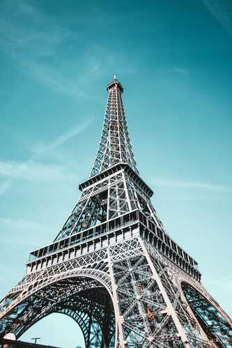
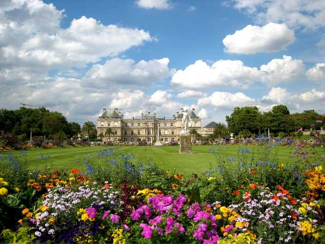
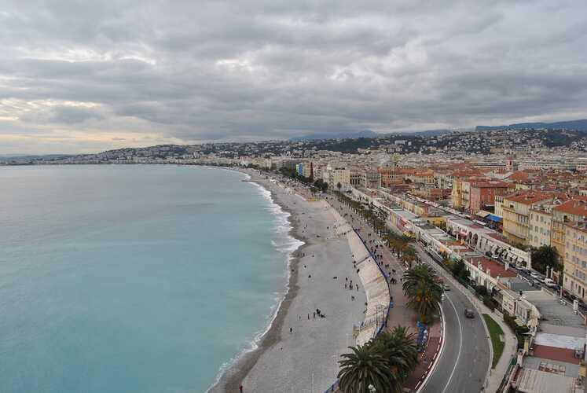
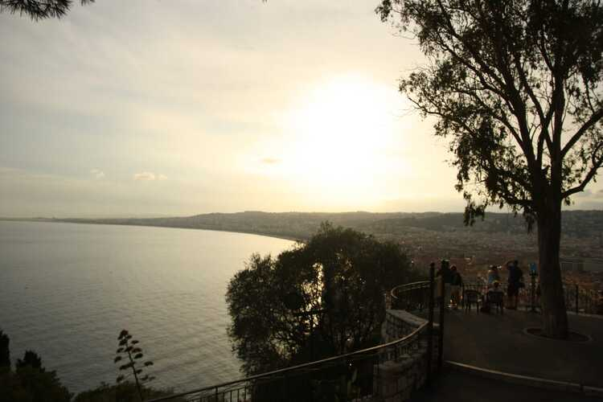
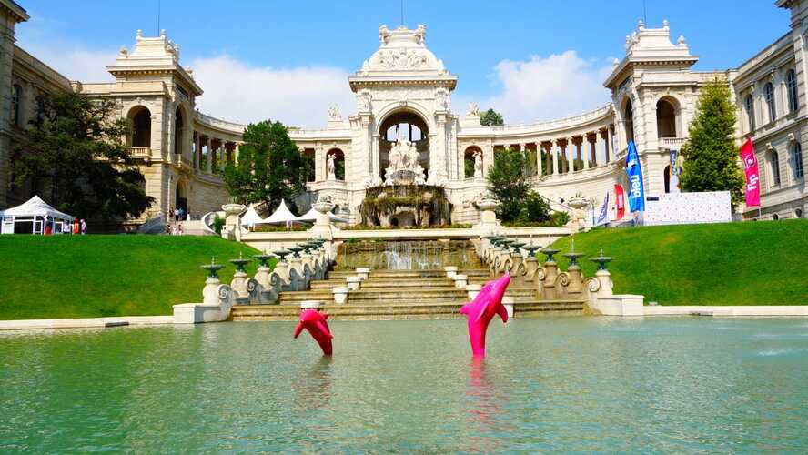

PARIS
1 - Torre Eiffel
Símbolo de Paris e da França, a silhueta da Dama de Ferro é conhecida mundialmente. Diversas cópias dela foram feitas, na França ou no exterior. A mais conhecida a fica em Las Vegas, mas há também uma Torre no Canadá, no Japão e até mesmo na Bolívia, em Honduras, no Vietnã e no Cazaquistão. Extremamente presente na cultura francesa, ela inspirou diversos artistas desde a sua construção: poetas como Guillaume Apollinaire, Blaise Cendrars ou Jean Cocteau, mas também diversos pintores (Chagall, Dufy, Delaunay), intérpretes de uma música sobre a Torre Eiffel (Mistinguett, Charles Trénet, Dutronc etc.) e cineastas. Podemos ver a Torre em diversos filmes: do "Zazie no metrô" de 1960 ao Super-Homem de 1980; do James Bond "Na mira dos assassinos" de 1985 ao "A hora du rush 3" de 2007. Essa onipresença geográfica e cultural permitiu forjar a Torre como a lenda que conhecemos hoje: uma grande Dama de Ferro, indissociável de Paris.
A Torre Eiffel foi tombada como monumento histórico em 1964 e faz parte do Patrimônio Mundial da Unesco desde 1991. Ela atrai cerca de 7 milhões de visitantes por ano, os quais 75% são estrangeiros. Por isso acabou se firmando como símbolo incontestável da França pelo mundo todo. Ela é o n.°1 dos monumentos pagos visitados no mundo e, desde sua inauguração em 1889, mais de 250 milhões de pessoas já foram visitá-la
2 - Jardim de Luxemburgo
O Jardim de Luxemburgo (Jardin du Luxembourg) é um dos mais bonitos e populares parques de Paris, localizado no 6º arrondissement, próximo ao bairro de Saint-Germain-des-Prés e do Quartier Latin. Foi criado em 1612 por ordem de Maria de Médici, viúva do rei Henrique IV, ao redor do Palácio de Luxemburgo, que ela também mandou construir. Hoje, o palácio abriga o Senado francês.
O jardim tem cerca de 25 hectares e é conhecido por sua combinação de estilos francês e inglês. Há uma grande variedade de árvores, estátuas, fontes, e canteiros de flores bem cuidados. No centro, fica o famoso lago octogonal com a Fonte de Médici, onde crianças costumam brincar com barcos à vela em miniatura. Há também áreas dedicadas a esportes, como quadras de tênis, e locais para relaxar e fazer piqueniques. O Jardim de Luxemburgo é um ponto de encontro de estudantes, artistas e parisienses, além de ser uma atração muito procurada por turistas.
Nice
1- Promenade des Anglais
O Promenade des Anglais é uma famosa avenida à beira-mar localizada em Nice, no sul da França, ao longo da Baía dos Anjos (Baie des Anges), no Mar Mediterrâneo. Com cerca de 7 km de extensão, ela oferece uma vista deslumbrante do litoral, sendo um dos pontos turísticos mais icônicos da cidade. Essa avenida é muito frequentada por turistas e moradores, que aproveitam para caminhar, correr, andar de bicicleta ou simplesmente relaxar nas suas praias. Há palmeiras ao longo do calçadão e diversos bancos para que as pessoas possam admirar o mar.
A Promenade des Anglais foi originalmente financiada pelo inglês Lewis Way, em meados do século XIX, para melhorar a área e proporcionar uma agradável caminhada para os visitantes britânicos que passavam o inverno em Nice. O nome "Promenade des Anglais" é uma homenagem a essa comunidade inglesa. Além de ser um marco turístico, a Promenade também é um local onde ocorrem eventos importantes, como o Carnaval de Nice e a Maratona da Riviera Francesa. No entanto, em 2016, a avenida foi palco de um trágico ataque terrorista durante as comemorações do Dia da Bastilha, que resultou na morte de 86 pessoas, marcando profundamente a história recente do local.
2 - Colline du Château
A Colline du Château (Colina do Castelo) é um dos principais pontos turísticos de Nice, localizada entre a cidade velha (Vieux Nice) e o porto. Apesar do nome, o castelo que existia no topo da colina foi destruído no início do século XVIII por tropas de Luís XIV, restando hoje apenas ruínas e vestígios das antigas fortificações. A colina é famosa pela vista panorâmica espetacular que oferece da cidade de Nice, incluindo a Baía dos Anjos, o porto, a Promenade des Anglais e os telhados vermelhos da cidade antiga. O local é cercado por um grande parque público, com áreas verdes, playgrounds, trilhas para caminhada e locais para piquenique, sendo um refúgio tranquilo no meio da agitação urbana.
Há também uma bela cascata artificial no parque, chamada de Cascade du Château, que é um ponto muito fotografado pelos visitantes. A subida à colina pode ser feita a pé ou por meio de um elevador público, e a recompensa no topo é a deslumbrante paisagem mediterrânea. A Colline du Château tem uma rica história, tendo sido uma fortaleza importante durante a Idade Média, antes de ser destruída. Hoje, é um lugar ideal para quem quer explorar a história de Nice e desfrutar de vistas inesquecíveis.
Marselha
1 - Château d'If
O Château d'If é uma famosa fortaleza localizada em uma pequena ilha no arquipélago de Frioul, ao largo da costa de Marselha, na França. Construído entre 1527 e 1529, sob ordens do rei Francisco I, o castelo inicialmente servia como uma fortificação para defender a cidade contra ataques marítimos. No entanto, nunca foi usado para fins militares e rapidamente se tornou uma prisão, conhecida por abrigar prisioneiros políticos e religiosos. O Château d'If ganhou notoriedade principalmente graças à obra "O Conde de Monte Cristo" (1844), do escritor Alexandre Dumas. Na história, o personagem principal, Edmond Dantès, é injustamente preso no Château d'If, onde passa muitos anos até conseguir escapar. Embora a história seja fictícia, a popularidade do romance trouxe enorme fama ao castelo, e muitos turistas visitam o local por conta dessa ligação literária.
O castelo está localizado em uma ilha rochosa, com apenas 30 hectares de extensão, e sua arquitetura é marcada por grossas paredes de pedra e torres. Além de sua função como prisão, as condições da fortaleza, cercada pelas águas do Mediterrâneo, faziam com que fosse praticamente impossível escapar. Hoje, o Château d'If é um importante ponto turístico de Marselha, atraindo visitantes interessados tanto em sua história real quanto na ficção literária. Há barcos que partem regularmente do porto de Marselha para a ilha, permitindo que os turistas explorem o castelo, suas celas e apreciem a vista deslumbrante do mar.

2 - Palais Longchamp
O Palais Longchamp é um impressionante monumento localizado em Marselha, França. Construído no século XIX, o palácio foi inaugurado em 1869 para celebrar a conclusão do Canal de Marselha, uma obra de engenharia que trouxe água potável do rio Durance até a cidade, resolvendo os problemas de escassez de água que Marselha enfrentava. O Palais Longchamp é uma obra-prima de arquitetura, desenhada por Henri-Jacques Espérandieu. Ele consiste em um vasto complexo com dois grandes edifícios curvos interligados por uma colunata central, onde há uma imponente fonte ornamental que representa figuras mitológicas, simbolizando o Rio Durance. A fonte e os jardins ao redor são elementos centrais do palácio, proporcionando um espaço encantador para passeios e relaxamento.
O Palais abriga dois museus importantes: o Museu de Belas Artes de Marselha, localizado no pavilhão esquerdo, que contém uma rica coleção de pinturas, esculturas e artefatos que vão desde o Renascimento até o século XIX; e o Museu de História Natural no pavilhão direito, que exibe coleções de zoologia, botânica e paleontologia. Além dos museus, o Palais Longchamp está cercado por um belo parque público, chamado Parc Longchamp, que é um dos espaços verdes mais apreciados de Marselha, com gramados, árvores antigas, lagos e áreas para piqueniques. O palácio é um símbolo do desenvolvimento e modernização de Marselha no século XIX e continua sendo um dos monumentos mais queridos da cidade, tanto pelo seu valor histórico quanto pela sua beleza arquitetônica.
